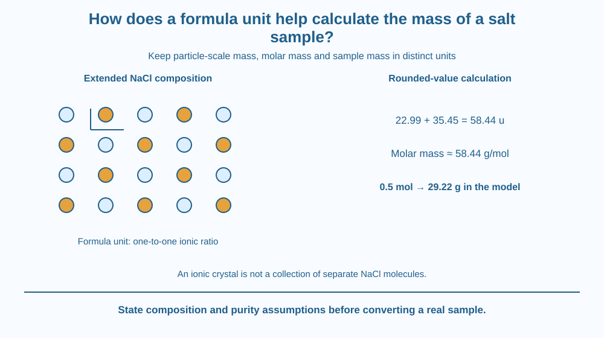

Use a salt's formula unit to connect atomic composition with formula mass and molar mass. Distinguish a particle-scale mass in u from a sample-scale mass in grams. Calculate an example without treating a sodium-chloride crystal as a collection of separate NaCl molecules.
A salt packet contains far too many particles to count individually by eye. Yet a chemical formula can help connect the material's composition with a measurable mass.
What does NaCl actually count? In a sodium-chloride crystal, it describes the simplest sodium-to-chloride ratio in an extended ionic arrangement. It does not mean the crystal is built from isolated two-atom molecules like tiny separate packets.
The formula unit provides a bookkeeping unit for that ratio. Combining it with atomic masses and the mole connects the invisible composition with a laboratory-scale sample.
A formula unit expresses the smallest whole-number ratio represented by an ionic compound's formula. For NaCl, that ratio is one sodium ion to one chloride ion. The whole crystal contains many ions in a repeating structure.
Formula mass adds the atomic-mass contributions specified by the formula. Using rounded values of 22.99 for sodium and 35.45 for chlorine gives 58.44 in unified atomic mass units, written u, per formula-unit composition.
The unit u describes particle-scale mass. It is not a gram. Writing 58.44 grams for one ordinary formula unit would confuse the microscopic unit with a macroscopic sample by an enormous factor.
A mole is an amount-of-substance unit linked to a specified number of entities. At school precision, one mole contains about 6.02 times ten to the power 23 specified entities. The entities must be named: here we count formula-unit compositions rather than separate NaCl molecules.
The corresponding molar mass of sodium chloride is about 58.44 grams per mole using these rounded values. Formula mass in u and molar mass in g/mol have related numerical values in this calculation, but they are different quantities and units.
For an example amount of half a mole, mass equals amount multiplied by molar mass. Using 58.44 g/mol gives 29.22 grams before considering practical measurement precision. This is a model calculation, not a claim that an actual salt packet has that amount.
For a compound whose formula contains more than one of an element, its atomic contribution must be multiplied by the subscript. Ignoring subscripts would lose the composition information that makes the formula useful. Our main worked example stays with NaCl's simple ratio.
Real samples can contain moisture or other ingredients. A calculation assuming pure NaCl does not determine the composition of arbitrary table salt automatically. The chemical formula and sample assumption must both be stated before converting a measured mass into amount of substance.
Draw a repeating two-colour lattice, then place a small bracket around one simplest ratio as a counting reference. Do not cut the drawing into independent molecules; the bracket represents composition bookkeeping within the extended solid.
Next make a scale ladder: formula ratio, formula mass, one-mole amount and sample mass. Put the correct unit at every step. This prevents the numerical similarity of 58.44 from hiding the difference between u and g/mol.
Finally add an impurity symbol to a sample box. The pure-compound conversion no longer describes every gram unless the NaCl fraction is known. The model links composition and mass without pretending a label alone proves purity.
The SVG shows an extended NaCl lattice with a one-to-one ratio marker. A separate addition panel combines the rounded atomic contributions into 58.44 u.
The scale conversion then identifies about 58.44 g/mol and the half-mole example of 29.22 g. Unit labels remain explicit rather than presenting one unexplained number at both scales.
The diagram is a formula-accounting model, not a re-creation of the earlier chemical-bond mechanism. Its caption states that a real mixed or moist sample requires composition information before the pure-salt calculation can be applied.

Laboratories use formulas and molar masses to prepare and compare known materials. The calculation depends on the substance identity and the amount being specified, not simply on a white powder's appearance.
In an Indian kitchen, table salt can include additives or moisture. That does not change the NaCl formula, but it can change what fraction of a sample is NaCl. A classroom calculation should state its pure-salt assumption.
No weighing of medicines, mixing of unknown chemicals or preparation of a medical solution is needed. The mass relation can be learned with paper values and correctly labelled units.
Use paper, a pencil and a calculator if needed.
State the pure-NaCl assumption and use the given precision consistently. The activity does not measure the purity or mass of a real household sample. Ask a partner to explain why the same numerical value appears with different units at different stages.
Why does an ionic formula unit not require isolated molecules to exist within the crystal? Separate a composition ratio from a claim about independently bounded particles.
Now imagine a sample containing NaCl plus another material. Which extra information is needed before the whole measured mass can be treated as sodium chloride? A formula describes the compound, not every possible mixture bearing its everyday name.
What does NaCl specify for the ionic crystal?
Answer: C — The formula unit records the simplest ionic composition ratio in the extended structure.
Why must u and g/mol be kept distinct?
Answer: A — Formula mass and molar mass are related numerically but have different meanings and units.
Using 58.44 g/mol, what mass corresponds to the example 0.5 mol?
Answer: B — Multiplying half a mole by 58.44 grams per mole gives 29.22 grams in the calculation.
Create a unit-safe calculation card with formula ratio, atomic-mass sum, molar mass, sample amount and resulting mass. Include the half-mole example using the supplied values.
Add two corrections: one formula unit does not weigh 58.44 grams, and an ionic crystal need not contain separate NaCl molecules. Finish with a sample-composition limitation rather than claiming the calculation proves a real salt packet pure.
A useful counting unit can describe a ratio inside a continuous structure rather than a tiny object that exists independently. Formula units let chemistry connect that ratio with mass while respecting the actual extended nature of an ionic solid.
A formula unit supplies ionic composition ratios; formula mass uses u, molar mass uses g/mol, and a pure-sample amount converts to mass through its molar mass.